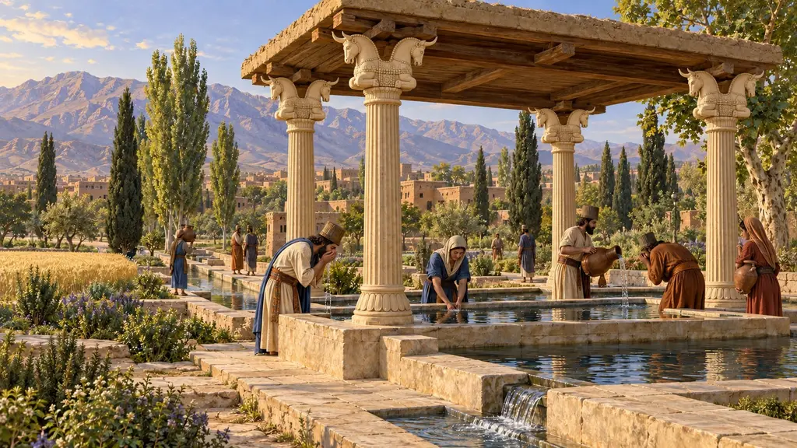
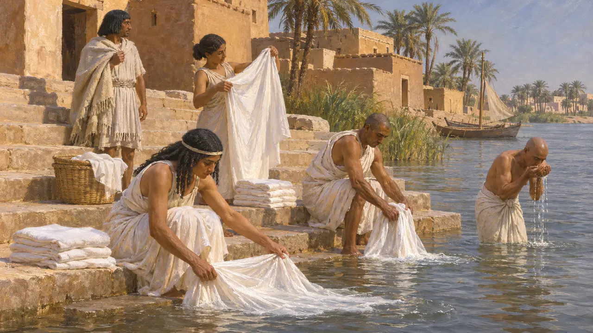
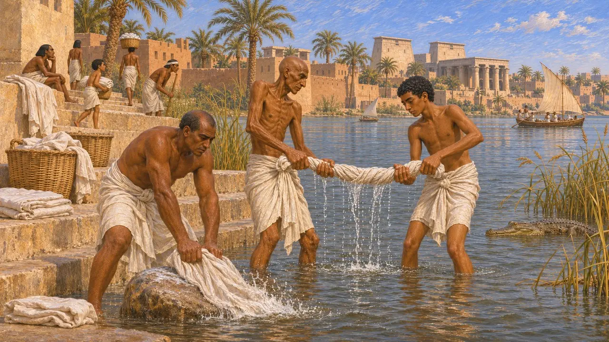
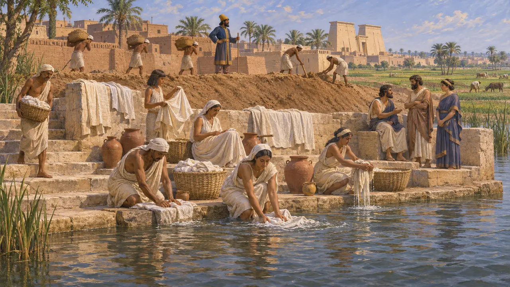
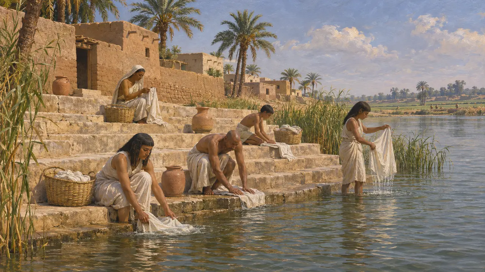

강변 계단
나일강에서 몸을 씻고 빨래하던 강변 선착장, 멤피스, 기원전 525년경
캄비세스가 525년에 점령한 이집트의 옛 수도 멤피스는 나일강 서안에 자리했으며, 주민들은 강과 운하에서 물을 긷고, 몸을 씻고, 옷을 빨았다. 아마포는 이집트의 흔한 옷감이었고, 이를 깨끗이 관리하는 일은 대부분의 사람들에게는 일상적인 집안일이었으며 사제들에게는 종교적 의무였다. 게임 속 강변 계단은 이러한 강가의 빨래터를 나타낸다.
게임에서: 강변 계단은 멤피스의 급수소입니다. 6칸 이내의 집들이 이곳에서 몸을 씻으며, 귀족 저택에는 강변 계단이 반드시 필요합니다. 게임에서는 멤피스 사람들이 강과 수로를 따라 곳곳에서 하던 일을 하나의 건물로 모았습니다.

헤로도토스가 전하는 깨끗한 아마포
고대의 전승헤로도토스는 페르시아의 정복 후 수십 년이 지나 이집트를 방문했다. 그는 이집트인이 아마포 옷을 입었으며 늘 갓 빤 상태로 유지하는 데 각별히 신경 썼다고 말한다. 같은 대목에서 그는 사제들이 몸의 털을 밀고 낮에 두 번, 밤에 두 번 찬물로 목욕했다고 전한다. 다른 곳에서는 술 장식이 달린 아마포 튜닉 위에 흰 양모 겉옷을 걸쳐 입었다고 묘사하며, 양모는 신전에 들이거나 죽은 이와 함께 묻지 않았다고 적고 있다.
Herodotus 2.37; Herodotus 2.81

이집트 사료 속의 세탁부
당대 기록페르시아 시대보다 훨씬 오래된 이집트 측 증거는 세탁이 하나의 직업이었음을 보여 주며, 베니 하산의 중왕국 무덤 벽화에는 사내들이 천을 두드리고 비트는 모습이 그려져 있다. 다른 직업을 조롱하며 서기의 삶을 찬양하는 학교 교재 『직업의 풍자』는 악어가 가까이 있는 강둑에서 일하는 세탁부를 묘사한다. 풍자는 과장되어 있지만, 남자들이 물가에서 빨래를 했다는 사실은 확인해 준다.
Satire of the Trades (Instruction of Khety), in M. Lichtheim, Ancient Egyptian Literature I, 1973; P. E. Newberry, Beni Hasan

멤피스와 그 강
고대의 전승헤로도토스에 따르면 멤피스는 초대 왕 민이 나일강에 둑을 쌓아 물길을 돌린 뒤 강에서 얻어 낸 땅 위에 세워졌다. 그는 자기 시대의 페르시아인도 해마다 이 둑을 보강했다고 덧붙인다. 또 아마시스가 카리아인과 이오니아인 공동체를 멤피스로 옮겨 자신의 호위대로 삼았다고 하니, 강가의 이 도시에는 이집트인뿐 아니라 외국인 정착민도 살았던 셈이다.
Herodotus 2.99; Herodotus 2.154

멤피스에 남아 있는 것
분쟁 중페르시아 시대 멤피스에서 발굴된 빨래 계단은 알려진 바 없다. 수 세기에 걸쳐 나일강이 동쪽으로 옮겨 가면서 고대 강변의 상당 부분이 지금은 미트 라히나 근처의 충적토와 들판 아래에 묻혀 있어, 부두와 선착장은 눈으로 보기보다 복원으로 짐작할 수밖에 없다. 물가로 내려가는 돌계단은 이집트 신전 부두와, 스트라본이 묘사한 엘레판티네의 나일로미터에서 확인된다. 멤피스의 평범한 주민이 어떻게 강에 닿았는지는 여전히 불확실하다.
D. Jeffreys, The Survey of Memphis I, 1985; Strabo 17.1.48
출처
- Herodotus 2.37, 2.81, 2.99, 2.154
- M. Lichtheim, Ancient Egyptian Literature I, 1973
- D. Jeffreys, The Survey of Memphis I, 1985
- Strabo 17.1.48
- P. E. Newberry, Beni Hasan